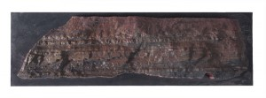
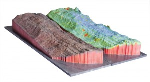

16
Feb
Finished two prints of a cliff face at Staithes, North Yorkshire. The first is one seen before, a colour-mapped scan showing areas of change:

The second is a full colour print from a newer scanner:
Here’s a shot of both, side by side (taken by Adam Clarkson) showing how the prints are aligned to allow direct comparison.

The prints will be mounted on reinforced posters for presentation.